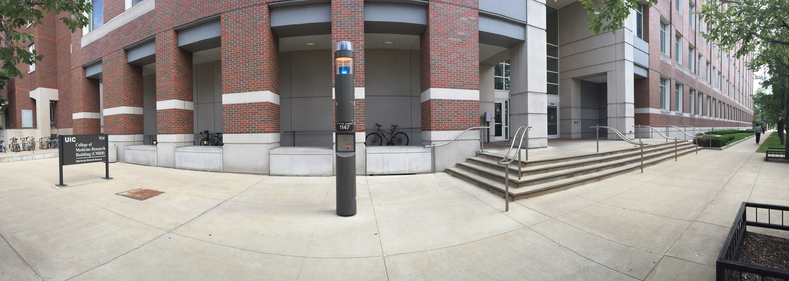
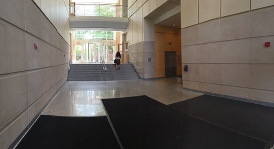
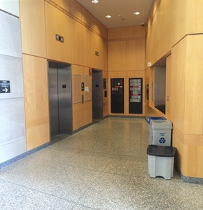
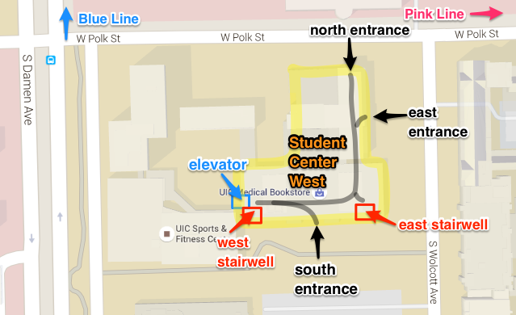
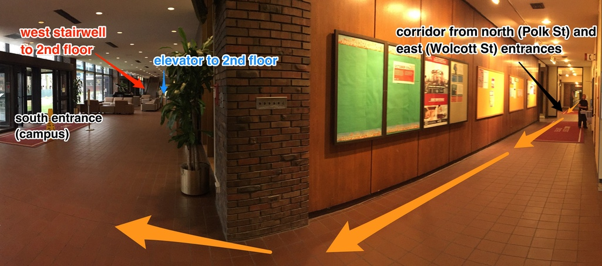
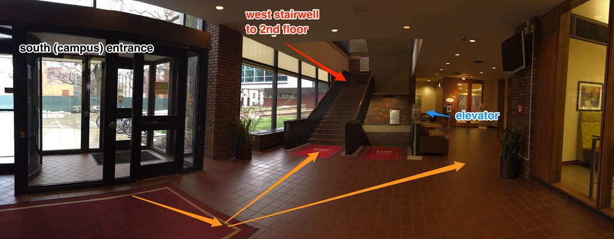
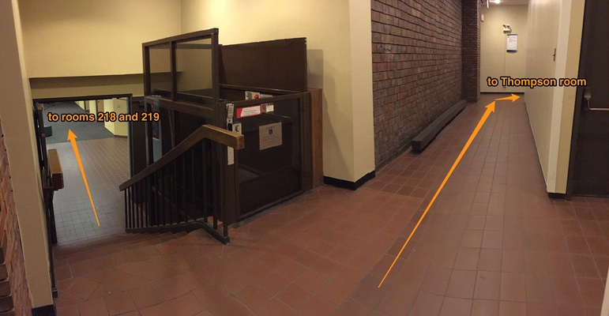
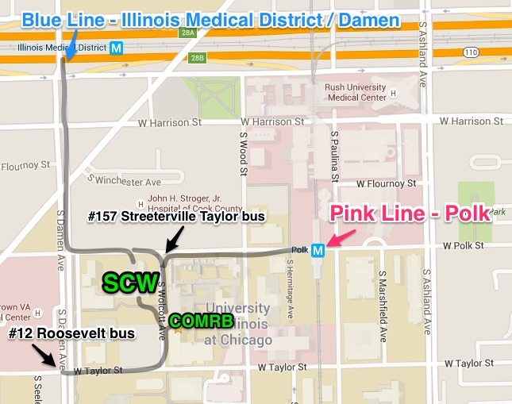
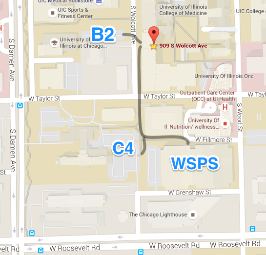

MidCamp 2016 is returning to UIC… but this time we will be on the west campus (different location than last year!). Let's take a closer look at our venues:
College of Medicine Research Building (COMRB)
Events at COMRB
- Thursday Trainings and Sprint
- Friday Board Game Social
- Sunday Sprint
College of Medicine Research Building (COMRB) is located at 909 S. Wolcott Street. (Note: the sign says UIC 934 - this is the correct place!) The entrance to COMRB has a ramp and the doors can be opened with a button.

Entrance to COMRB - 909 S. Wolcott St. (sign says UIC 934 - this is the same building!)
Once inside the building, head forward. The elevators will be to your right.

COMRB entrance lobby - elevators are to the right.
- Thursday Trainings and Sprint registration will be on 2nd floor
- Friday Board Game Social will be on 8th floor in room 8175
- Sunday Sprint will be on 3rd floor in room 3175
Bathrooms in COMRB
Bathrooms are located near the elevators on every floor of COMRB.
COMRB Floor Plan
With exception of the ground floor, all floors in COMRB have the same layout. View full size floor layout.
{kind=link}
Student Center West (SCW)
Events at SCW
- Friday Sessions
- Saturday Sessions
Presentation sessions on Friday and Saturday will be at the Student Center West. If you participated in MidCamp 2015, note that this is not the same location as last year. MidCamp sessions will be on the 2nd floor of Student Center West (SCW).
Public transit and parking instructions listed in the previous section also apply to Friday and Saturday.
Entrances to Student Center West
There are three entrances to Student Center West (SCW). All three entrances are at ground level and have doors that can be opened with a button:
- north (from Polk St, convenient if you are arriving by CTA Blue Line or #50 bus)
- east (from Wolcott St, convenient if you are arriving by CTA Pink Line or #157 bus)
- south (campus entrance, convenient if you are arriving by #12 bus, or parking lots B2, C4 and Wood Street Parking Structure). This entrance is the closest to the 2nd floor conference area.

Map of entrances to Student Center West (SCW).
If you enter from Polk Street (north), walk forward until you reach the south entrance area. On the way you will pass a coffee shop and cafeteria entrance. When you reach the south entrance, the east stairwell will be ahead of you. Take the stairs to second floor. To use the elevator, turn right and head forward. The elevator is ahead straight, behind the west stairwell.
If you enter from Wolcott Street (east), walk forward and turn left (on your right will be a coffee shop). Continue along the corridor until you reach the south entrance area and the east stairwell. To use the elevator, turn right and head forward. The elevator is ahead straight, behind the west stairwell.
If you enter from the campus side (south), turn left to reach the stairs to the second floor. The elevator is located behind the stairs.

View of south entrance and corridor from north and east entrances.

South entrance lobby - west stairwell and elevator to 2nd floor.
Getting around the conference area
The conference area is on the second floor of Student Center West. Registration will be accessible from the top of either stairwell. As you exit the elevator, turn right to reach registration.
Most of the conference is on the same floor. The exceptions are Rooms 218 and 219, which are in an adjoining building, accessible through an indoor corridor. There is a short flight of stairs (10 steps) in the corridor leading to rooms 218 and 219. Next to the stairs is an accessibility platform.

Corridor to Rooms 218 and 219 - stairs and accessibility platform.
Bathrooms
Bathrooms are located on either side of Thompson room (the main ballroom, which will serve as the location for keynote, camp sprints, birds-of-feather meetings and lunch).
Session Rooms
In each room there is a speaker podium with a microphone, and a table with chairs. We are excited to announce that room SCW 206AB - BlackMesh will have live captioning.
SCW Floor Plan
View full size floor plan of SCW 2nd floor.
{kind=link}
Getting to our venues
Student Center Center West (SCW) and College of Medicine Research Building (COMRB) are across the (Wolcott) street from each other. Therefore, the directions to get there are very similar.
Public transit
Both venues are about 7 minute (0.3 mile) walk from the Pink Line Polk station, and a 11-12 minute walk (0.6 mile) walk from the Blue Line Illinois Medical District (Damen) station.
#157 Streeterville-Taylor bus stops at Polk and Wolcott. From the bus stop, it is about a 2 minute walk to the entrance of COMRB. #12 Roosevelt bus stops at Taylor and Damen. From the bus stop it is about a 4-5 minute walk to the entrance of COMRB or SCW.

Map showing public transit (bus and train) options near COMRB.
If you are arriving by Metra:
- from Ogilvie Transportation Center you can take #157 bus or walk to the Pink Line Clinton station to take the Pink Line to Polk stop
- from Union Station, you can take #157 bus, or walk to the Blue Line Clinton station to take the Blue Line to Illinois Medical District Damen stop
Parking
Visitor parking is available in Wood Street Parking Structure (WSPS). It is about a 3 minute (0.2 mile) walk from WSPS to the COMRB or SCW entrance. WSPS is a 24 hour parking lot, we recommend you park there.
Other lots are B2 and C4. Parking lot B2 is a small lot that's very close to either venue, but it is not open 24 hours. Parking lot C4 is another visitor parking lot.

Map showing visitor parking lot near MidCamp venues - Wood Street Parking Structure (WSPS).